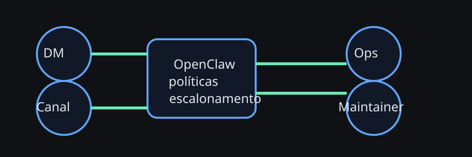

Quando o agente entra em contexto de time, o desafio deixa de ser só técnica. Passa a ser coordenação, confiança, limites e documentação compartilhada.
OpenClaw para times e colaboração
OpenClaw funciona muito bem como ferramenta individual, mas ganha complexidade quando vira parte do trabalho de um time. Este capítulo cobre os padrões que ajudam a manter colaboração útil sem transformar o agente em ruído organizacional.
Diagrama — operação de time

Quando OpenClaw vira ferramenta de time
O problema muda quando mais de uma pessoa depende do agente. Você passa a precisar de papéis claros, regras de visibilidade, handoff entre canais e uma convenção explícita para o que o agente pode responder sozinho.
Quatro padrões úteis
Regras de convivência que evitam caos
- defina superfícies: DM, canal público, incidentes, revisão
- separe agentes estáveis de agentes experimentais
- escreva políticas de menção, resposta e privacidade
- registre decisões operacionais em arquivos, não em memória implícita
Checklist — onboarding do agente para um time
- Defina objetivo e limites do agente em uma página curta.
- Escolha quais canais ele lê e quando deve falar.
- Crie um caminho de escalonamento para dúvidas sensíveis.
- Rode uma semana de observação antes de ampliar autonomia.
Modelo operacional de time: quem decide o quê
Times saudáveis não jogam tudo na conta do agente. Eles definem quem aprova, quem mantém e quem absorve incidente antes de ampliar autonomia.
Checklist — rollout para times em 3 fases
- Observação: o agente lê, resume e sugere, mas não executa nem responde sozinho em canais sensíveis.
- Copiloto: o agente responde em fluxos simples, com regras de menção e escalonamento bem escritas.
- Autonomia limitada: só depois de métricas estáveis, evals aprovados e guardrails de custo/segurança o escopo aumenta.
Playbook corporativo: intake, ownership e fronteiras
Em ambiente corporativo, o agente precisa caber em um fluxo de trabalho com dono explícito. Isso significa deixar claro quem recebe a demanda, quem aprova, quem executa e em que ponto o pedido sai do canal e vira ticket, runbook ou incidente formal.
Esse quadro evita um erro clássico: tratar toda mensagem como se tivesse o mesmo peso operacional. Em times maduros, o agente ajuda a classificar a demanda antes de tentar resolvê-la.
Modelo mínimo de ownership entre times
Se OpenClaw atende mais de um squad, vale separar ownership em quatro camadas. Isso reduz ambiguidade e ajuda a evitar a sensação de que “o agente é de todo mundo e de ninguém”.
RACI mínimo para adoção sem caos
- Responsible: um owner técnico mantém prompt-base, tools e configuração.
- Accountable: um owner de processo decide onde o agente pode responder sozinho.
- Consulted: segurança, privacidade e compliance entram antes de ampliar acesso ou memória compartilhada.
- Informed: squads afetados recebem changelog curto quando modelo, policy ou escopo mudam.
Fronteiras saudáveis entre squads
Boa colaboração não é só compartilhar o mesmo bot. É manter fronteiras legíveis. Quando o agente cruza fronteiras demais, ele começa a misturar contexto, custos e responsabilidades.
- evite um único agente com memória compartilhada para contextos de produto diferentes sem necessidade real
- prefira agentes ou canais separados quando os playbooks divergem muito
- use handoff explícito: “isso sai do squad A e entra no owner de plataforma”
- registre decisões estruturais em arquivos versionados, não em conversa efêmera
- se um canal mistura suporte, planejamento e incidente, o agente também vai misturar prioridades
Três playbooks corporativos que funcionam bem
1. Intake assistido
O agente recebe a demanda, classifica, coleta campos mínimos e transforma a conversa em ticket ou checklist pronto para o humano decidir.
2. Handoff entre times
Antes de escalar, o agente resume contexto, impacto, evidências e próximo dono. Isso reduz repetições e evita escalonamento “no escuro”.
3. Pós-incidente operacional
Depois do incidente, o agente ajuda a consolidar timeline, aprendizado, links, follow-ups e atualização da documentação compartilhada.
Exemplo — playbook de handoff em 6 passos
- classifique a demanda: suporte, incidente, mudança, dúvida, policy
- colete evidências mínimas: canal, horário, erro, impacto, links
- identifique owner primário e owner secundário
- escreva resumo curto com hipótese e bloqueio atual
- declare claramente o que ainda precisa de decisão humana
- registre o resultado em ticket, issue ou arquivo operacional
Troubleshooting de colaboração em ambiente corporativo
Métricas de colaboração
- tempo até primeira resposta útil
- taxa de intervenções desnecessárias
- quantidade de handoffs bem-sucedidos
- número de decisões capturadas em documentação
- tempo entre incidente e registro do aprendizado em arquivo compartilhado
- distribuição de uso por canal, para evitar que um squad absorva o custo de todos